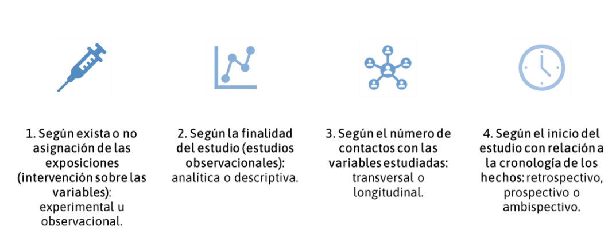

2 Diseños de investigación
Un estudio bien diseñado es la piedra angular de una investigación científica rigurosa y confiable. El diseño de investigación define la estrategia metodológica que guiará la recopilación, y en cierto grado el análisis e interpretación de los datos, asegurando que los datos obtenidos permitan conclusiones válidas a partir de resultados reproducibles. En el ámbito de la Medicina y las Ciencias de la Salud, la elección del diseño adecuado es crucial, ya que impacta directamente en la solidez de la evidencia científica generada.
Los diseños de investigación pueden clasificarse en diversas categorías según su estructura, enfoque metodológico y finalidad. Existen diseños experimentales, observacionales, longitudinales, transversales, entre otros. Un diseño bien estructurado permite minimizar sesgos, optimizar la validez de los resultados y garantizar que la investigación pueda responder de manera objetiva y precisa a los interrogantes planteados.

En esta sección, abordaremos brevemente los distintos tipos de diseños de investigación empleados en estudios primarios dentro del paradigma cuantitativo. Exploraremos sus características esenciales, ventajas y limitaciones, proporcionando ejemplos que facilitarán la comprensión de su aplicación en el contexto biomédico.
2.1 Clasificación general
Los diseños en estudios de tipo experimental se enumeran a continuación:
-
Ensayos clínicos
Ensayos clínicos aleatorizados (ECA)
Ensayos clínicos no aleatorizados (ECNA)
Ensayos comunitarios
Ensayos no clínicos o pre-clínicos
Por otro lado, los diseños en estudios observacionales “analíticos” son:
Trasversal analítico
Caso-control
Cohorte
Por último, algunos autores consideran dentro de los diseños de estudios observacionales “descriptivos” a:
Estudios de Prevalencia
Estudios ecológicos o de panel
Serie de casos o reportes de casos

Warning!
Muchos investigadores confunden el término cohorte, que hace referencia a un grupo de pacientes con una misma exposición o que comenzaron en un estudio de seguimiento, con el diseño de cohorte que veremos en este capítulo.
2.2 Ensayos clínicos
Un EC es una evaluación experimental de un producto, sustancia, medicamento, técnica diagnóstica o terapéutica que, a través de su aplicación a seres humanos, pretende valorar su eficacia y seguridad.
Existen varios tipos de diseño de ensayos clínicos, que se pueden clasificar de la siguiente manera:
Si se utiliza un grupo control con el que comparar el tratamiento en investigación:
Ensayos no controlados
Ensayos controlados
Según el método utilizado para asignar a los participantes a los grupos de tratamiento o control, tendremos:
Ensayos no aleatorizados
Ensayos aleatorizados
En función de la conciencia de los participantes o de los investigadores de a qué grupo de tratamiento se asignan los participantes, tendremos:
- Estudios abiertos
-Estudios ciegos
Según la magnitud del resultado que se espera encontrar entre los grupos de tratamiento y el control:
Ensayos de superioridad
Ensayos de bioequivalencia
Ensayos de no inferioridad
Según la estructura del tratamiento:
Ensayos paralelos
Ensayos cruzados
Ensayos factoriales
De acuerdo con los objetivos perseguidos y la información disponible, se distinguen los siguientes tipos de EC:
Ensayos clínicos en fase I
Ensayos clínicos en fase II
Ensayos clínicos en fase III
Ensayos clínicos en fase IV
Metodología de un ECA
Selección de Participantes y Tamaño de la Muestra
Los participantes de un ECA deben otorgar su consentimiento informado. La población experimental se define por criterios de inclusión y exclusión, lo que equilibra validez interna y generalización. La determinación del tamaño muestral debe garantizar suficiente poder estadístico para detectar diferencias significativas sin desperdiciar recursos. Un muestreo incorrecto puede sesgar los resultados.
Asignación Aleatoria y Sesgo de Selección
La aleatorización distribuye equitativamente a los participantes en los grupos de intervención, minimizando sesgos y equilibrando factores pronósticos. Existen métodos como la aleatorización simple, por bloques y estratificada. Además, el enmascaramiento evita que los investigadores o participantes influyan en los resultados.
Enmascaramiento (Cegamiento)
Se utilizan técnicas de cegamiento para evitar sesgos. Existen tres niveles:
Simple ciego: el participante desconoce el tratamiento.
Doble ciego: tanto el participante como el investigador lo desconocen.
Triple ciego: también lo desconoce quien analiza los datos.
Si no es posible el doble ciego, se puede emplear una evaluación no enmascarada de los resultados (open label).
Pérdidas, Abandonos y Sesgo de Seguimiento
Es crucial registrar las pérdidas y sus causas para evitar el sesgo de seguimiento. El análisis por intención de tratar conserva la aleatorización y refleja la práctica clínica real.
Directrices para el reporte de los ECA
Existen guías que rigen que se debe reportar al momento de publicar un ECA, siendo la declaración CONSORT la más utilizada. CONSORT proporciona una lista de verificación de 25 ítems y un diagrama de flujo para mejorar la transparencia y la validez de los estudios. Se han desarrollado extensiones para otros tipos de ensayos, disponibles en EQUATOR Network.
¡Atención!
Los momentos más importantes al inicio de un ECA son al aleatorizar y al garantizar el ocultamiento de la secuencia aleatoria. Este proceso asegura que factores confusores observables y no observables esten equilibrados en ambos grupos y por ende controlados para el análisis
2.3 Diseño trasversal analítico
2.4 Diseño de casos-controles
2.5 Diseño de cohorte
¡Atención!
Elegir correctamente el diseño de estudio no solo mejora la calidad y credibilidad de sus resultados, sino que también aumenta sus posibilidades de publicación.
2.6 Referencia
Torales Julio, Barrios Iván. Diseño de investigaciones: algoritmo de clasificación y características esenciales. Med. clín. soc. [Internet]. 2023 Dec [cited 2025 Feb 09] ; 7( 3 ): 210-235. Available from: https://doi.org/10.52379/mcs.v7i3.349
Ledesma Albarrán JM, Gutiérrez Olid M. Estudios experimentales. Ensayo clínico aleatorizado. Form Act Pediatr Aten Prim. 2013;6;123-32. Available from: https://fapap.es/articulo/246/estudios-experimentales-ensayo-clinico-aleatorizado